유통관리사-1급 (2018-07-01 기출문제)
1과목: 유통경영
1. 영업사원 성과지표를 과정지표와 결과지표로 구분할 경우, 지표의 이름과 구분의 짝으로 가장 옳지 않은 것은?
- 커뮤니케이션 기술 - 과정지표
- 1일 방문 고객수 - 결과지표
- 시간관리기술 - 과정지표
- 판매수량 - 결과지표
- 방문 대비 수주율 - 결과지표
(정답률: 알수없음)

2. 매출액 예측기법 각각과 그 설명으로 가장 옳지 않은 것은?
- 영업사원 예측합산법 - 정성(주관)적 예측기법으로, 영업사원으로부터 자신이 담당하고 있는 구역에서 향후 일정기간 동안 판매될 것으로 예측되는 제품수량에 대한 자료를 수집한 후, 이를 회사 차원에서 합산하여 판매를 예측하는 기법
- 경영진 의견법 - 정성(주관)적 예측기법으로, 경영진으로부터 판매에 대한 예측치를 수집하여 이를 기반으로 회사의 판매액을 예측하는 기법
- 델파이기법 - 정량(객관)적 예측기법으로, 여러 명의 전문가로부터 자료를 취합하여 평균을 도출 후 회사의 판매액을 예측하는 기법
- 이동평균법 - 정량(객관)적 예측기법으로, 제품의 판매량을 기준으로 일정기간별로 산출한 평균추세를 통해 미래수요를 예측하는 기법
- 회귀분석법 - 정량(객관)적 예측기법으로, 매출액에 영향을 미치는 변수들을 독립변수로, 매출액을 종속 변수로 선정하여 이들간 (선형)관계의 정도를 추정하기 위한 기법
(정답률: 알수없음)
3. 재무비율의 이름과 경제적 의미로 가장 옳은 것은?
- 재고자산회전율 - 수익성
- 매출채권회전율 - 활동성
- 이자보상비율 - 유동성
- 당좌비율 - 안전성
- 매출액영업이익률 - 생산성
(정답률: 알수없음)
4. 한국채택국제회계기준(K-IFRS)상 재무제표에 대한 설명으로 옳지 않은 것은?
- 경영진은 재무제표를 작성할 때 계속기업으로서의 존속가능성을 평가해야 한다.
- 재무제표는 기업의 재무상태, 재무성과 및 현금흐름을 공정하게 표시해야 한다.
- 재무제표의 목적은 광범위한 정보이용자의 경제적 의사결정에 유용한 기업의 재무상태, 재무성과와 재무상태 변동에 관한 정보를 제공하는 것이다.
- 전체 재무제표는 대차대조표, 손익계산서, 자본변동표, 현금흐름표를 말한다.
- 각각의 재무제표는 전체 재무제표에서 동등한 비중으로 표시한다.
(정답률: 알수없음)
5. 근로자참여 및 협력증진에 관한 법률 상, 사용자가 노사협의회의 의결을 거쳐야 할 사항이 아닌 것은?
- 생산성 향상과 성과 배분
- 근로자의 교육훈련 및 능력개발 기본계획의 수립
- 복지시설의 설치와 관리
- 사내근로복지기금의 설치
- 각종 노사공동위원회의 설치
(정답률: 알수없음)
6. 리더의 역할은 사회 환경에 맞춰 변해오고 있는데 패런(C. Farren)과 케이(B. Kaye)가 주장한 현대적 리더의 특징으로 가장 옳지 않은 것은?
- 직업의 가치와 일에 대한 관심을 가질 수 있도록 돕는 지원자의 역할
- 조직과 관련된 주요 사항을 결정하며 권력에 의존하는 관리자의 역할
- 직원들의 작업 수행평가 기준과 기대치를 명확히 하는 평가자의 역할
- 기업이나 해당 산업에 대한 정보를 제공하는 예측자의 역할
- 경력개발을 위한 행동계획을 이행하는데 필요한 자원을 연계시켜주는 격려자의 역할
(정답률: 알수없음)
7. 고객의 구매행동에 관한 내용으로 옳지 않은 것은?
- 소비자들이 구매에 크게 관여하고, 상표 간의 유의한 차이를 인식할 때는 소비자는 복잡한 구매행동을 거치게 된다.
- 제품이 고가이며 간혹 구매하고, 높은 자아표현적일 경우 복잡한 구매행동을 한다.
- 습관적 구매행동은 고관여와 유의한 상표의 차이가 큰 조건 하에서 구입하는 경우에 일어난다.
- 상표차이가 거의 없는 저관여 제품의 마케팅 관리자는 제품사용을 자극하기 위해 가격촉진과 판매촉진을 사용하는 것이 효과적이다.
- 소비자가 다양한 맛의 과자를 맛보기 위해 여러 상표를 선택하는 경우는 다양성 추가 구매행동으로 볼 수 있는데 상표변경은 다양성을 추구함으로써 일어난다.
(정답률: 알수없음)
8. 아래 글상자에서 주어진 자료를 통해 순영업이익률을 계산하면 얼마인가?
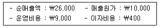
- 약 15%
- 약 27%
- 약 32%
- 약 41%
- 약 5%
(정답률: 알수없음)
9. 식품위생법[시행 2018.4.19] [법률 제14835호, 2017.4.18, 일부개정]상, 용어의 설명으로 옳은 것은?
- 식품위생이란 식품, 식품첨가물에 관한 위생이며, 포장위생이란 기구나 용기 포장을 대상으로 한다.
- 집단급식소란 특정 다수인에게 영리를 목적으로 음식물을 공급하는 시설을 말한다.
- 식품이란 섭취하는 모든 음식물과 의약을 말한다.
- 기구나 용기를 살균, 소독하는데 사용되는 간접적인 물질도 식품 첨가물이다.
- 영양표시란 식품에 들어있는 영양소에 대한 질적 정보만을 의미한다.
(정답률: 알수없음)
10. 임금수준을 결정할 때 고려할 요인으로 가장 옳지 않은 것은?
- 국가에서 제정하는 임금 관련 법규
- 금융시장, 물가 변동 등의 경제적 환경
- 근로자의 일정 수준 생계 보장을 위한 표준생계비
- 노동시장의 임금수준
- 기업의 업종과 규모
(정답률: 알수없음)
11. 피들러(Fiedler)는 리더십유형과 리더십이 행사되는 상황을 연결하여 리더의 성과를 설명하고 있다. 그에 의하면, 과업지향적 리더는 어느 상황에서 가장 효과적인가?
- 중간이나 그 이상으로 우호적일 때
- 전체적으로 중간 수준으로 우호적일 때
- 전체적으로 매우 비우호적일 때
- 매우 우호적이거나 매우 비우호적일 때
- 전체적으로 비교적 우호적일 때
(정답률: 알수없음)
12. 경영분석의 목적이라고 보기 어려운 항목으로 옳은 것은?
- 경영전략수립에 필요한 정보제공
- 경영활동에서 개선되어야 할 항목을 찾아내는 단서 발견
- 업무계획의 수립
- 경영예산 편성
- 장기경영계획수립을 위한 기초정보
(정답률: 알수없음)
13. 죠하리의 창(Johari's Windows)에 대한 설명으로 옳지 않은 것은?
- 공개 영역이 넓을수록 참여자들이 서로에 대해 정확한 지각 상의 판단을 내릴 수 있는 기회가 적어진다.
- 관계당사자들이 타인에게 자신을 노출하고 그들에게서 피드백을 받을수록 공개 영역은 확장된다.
- 열린(open) 창, 숨겨진(hidden) 창, 보이지 않는(blind) 창, 미지(unknown)의 창 등으로 나눈다.
- 기대의 충족은 그들의 신뢰나 영향력을 증대시키고 그들이 상호만족한 관계를 유지할 수 있게 한다.
- 참여자들이 상호 공개 영역을 늘릴 때 허식과 방어적 행동이 증가하게 된다.
(정답률: 알수없음)
14. 조직에서 과업의 분화가 이루어지는 정도를 복잡성 (complexity)이라 한다. 이는 수평적 분화와 수직적 분화로 나누어지는데, 이 중 수평적 분화에 대한 설명으로 옳지 않은 것은?
- 기본적으로 기능, 제품, 지역, 고객 등을 중심으로 이루어진다.
- 조직이 여러 상이한 부서나 전문화된 하위단위를 보유하는 정도를 말한다.
- 수평적 분화가 많이 일어날수록 복잡성은 증가한다.
- 분화를 통해 계층 또는 위계가 형성된다.
- 직무전문화와도 관련이 있다.
(정답률: 알수없음)
15. 동태비율(動態比率)에 포함되는 것으로 옳은 것은?
- 고정장기적합비율
- 부채비율
- 자기자본이익률
- 고정비율
- 현금비율
(정답률: 알수없음)
16. 아래 글상자는 어떤 비율에 대한 설명인가?
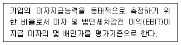
- 이자환수비율
- 이자회전비율
- 이자보상비율
- 이자상환비율
- 이자회수비율
(정답률: 알수없음)
17. 손익분기점과 관련된 내용 중 옳지 않은 것은?
- 제품의 단위당 공헌이익이 총고정원가를 회수하는데 사용된다고 본다.
- 손익분기점은 적자를 면하는 최소한의 매출량을 말하며 이는 미래 수익발생능력의 안전도를 평가하는 기준이 될 수 있다.
- 다른 조건이 동일하다면 고정비의 비율이 높을수록 손익분기매출액은 늘어난다.
- 안전율(MS : margin of safety)이란 기업이 손실 없이 조업을 단축할 수 있는 여유를 보여주는 척도이다.
- 매출량이 손익분기점 이하로 예상될 때는 하청생산 보다는 자체생산을 강화하는 것이 좋다.
(정답률: 알수없음)
18. 집중적 유통경로(intensive distribution channel)에 가장 적합한 것은?
- 식료품, 담배 등을 판매하는 편의점
- 카메라 렌즈를 전문적으로 판매하는 상점
- 고급 의류 및 보석을 판매하는 상점
- 특정 브랜드의 전자제품만 판매하는 매장
- 독특한 디자인 가구를 판매하는 가구점
(정답률: 알수없음)
19. 가맹사업거래의 공정화에 관한 법률[시행 2018.4.17][법률 제15610호, 2018.4.17., 일부개정]상, 가맹본부의 준수사항에 해당하지 않는 것은?
- 가맹사업의 통일성 및 명성을 유지하기 위한 노력
- 상품이나 용역의 품질관리와 판매기법의 개발을 위한 계속적인 노력
- 가맹점사업자와 그 직원에 대한 교육·훈련
- 가맹점사업자의 경영·영업활동에 대한 지속적인 조언과 지원
- 가맹점사업자와의 대화와 협상을 통한 분쟁해결 노력
(정답률: 알수없음)
20. 학습조직이란 변화에 대응하는 능력(지식, 노하우, 실력등)을 계속 습득해 가는 조직을 말한다. 학습조직과 가장 관련이 없는 것은?
- 학습전이효과
- 적응조직(single-loop learning)과 생성조직(double-loop learning)
- 이완학습 또는 파괴학습
- 수단적 조건학습
- 벤치마킹
(정답률: 알수없음)
2과목: 물류경영
21. 물류관리에 관한 내용으로 가장 옳지 않은 것은?
- 재공품(WIP : Work In Process)은 JIT개념에서는 재고로 인식된다.
- 우리나라 KS규격의 표준 파렛트에는 1,000mm×1,000mm가 포함되지 않는다.
- 포장 표준화를 위해 모듈(module)화 방식을 활용한다.
- 물품을 크게 하나의 묶음으로 만들어 체계적으로 운영ㆍ관리하는 것을 Unit Load System이라고 한다.
- Pallet Pool System에서는 파렛트의 규격보다는 재질이 더 중요하다.
(정답률: 알수없음)
22. 유통업체가 EDI를 사용함으로써 얻을 수 있는 장점으로 옳지 않은 것은?
- EDI를 통해 해당 유통회사에 대한 고객의 충성도가 강화된다.
- EDI를 통해 정보가 더 신속하게 흐른다.
- 향상된 문서보존, 주문의 입력과 수령이 가능해진다.
- ASN(Advance Shipping Notice) 관련 실수가 감소되고, 데이터 해석 시 실수가 덜 발생하여 통신의 질이 향상된다.
- EDI에 의해 상품주문부터 상품수령 사이의 공정과 시간이 줄어든다.
(정답률: 알수없음)
23. 물류 영역 중 조달물류에 관련된 활동으로 옳지 않은 것은?
- 협력업체와의 공동화 납품
- JIT 납품
- 수송루트 효율화
- 차량 회전율 증대
- 작업교체 및 생산사이클 단축
(정답률: 알수없음)
24. 기업의 이익 증대를 위한 방법에 매출증대와 원가절감이 있다. 아래 글상자 내용은 물류원가 절감을 통해 이윤이 증대된 어느 기업의 상황이다. ( )안에 들어갈 내용을 순서대로 옳게 나열한 것은?
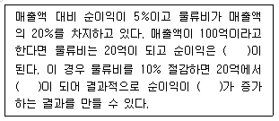
- 1억, 18억, 200%
- 1억, 10억, 100%
- 5억, 18억, 40%
- 5억, 16.2억, 76%
- 2억, 18억, 100%
(정답률: 알수없음)
25. 아래 글상자 ( )안에 들어갈 단어를 순서대로 옳게 나열한 것은?
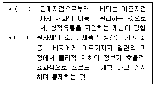
- 물적유통, 로지스틱스
- 로지스틱스, 물적유통
- 물적유통, 구매물류
- 생산물류, 판매물류
- 공동물류, 공동수배송
(정답률: 알수없음)
26. 유통에서 물류가 중요하게 고려되는 이유로 옳지 않은 것은?
- 물류분야는 관리혁신을 통하여 비용절감이 가능하기 때문이다.
- 물류분야는 그동안 기업활동의 보조나 지원수단으로만 인식되어 왔기 때문에 다른 분야에 비해 개척하거나 개선할 여지가 남아있기 때문이다.
- 다단계 유통구조의 집중저장의 원리는 신뢰 가능한 물류흐름을 전제로 하기 때문이다.
- 제품계열 확장에 따른 품목의 다양화는 재고관리와 수송 등 상적유통의 문제를 완화시켜서 비용을 절감하는데 도움을 주기 때문이다.
- 물류서비스를 통해 기업은 고객에 대한 서비스 수준을 높일 수 있기 때문이다.
(정답률: 알수없음)
27. ICD에 대한 내용으로 옳은 것을 모두 나열한 것은?
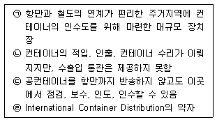
- ㉠
- ㉡
- ㉢
- ㉡,㉢
- ㉠,㉣
(정답률: 알수없음)
28. A기업의 연간 물품 구매액은 $1,000이다. 주문비용은 1회 당 $25가 발생하고, 물품의 재고 보유비용은 물품 가격의 20%이다. 개당 물품 가격이 $5라고 하면 경제적 주문량(EOQ)은 얼마인가?
- 1,000
- 223
- 158
- 100
- 50
(정답률: 알수없음)
29. 공동수배송의 장점으로 옳지 않은 것은?
- 기업의 영업기밀유지
- 운송대형화로 인한 경제성 향상
- 교통체증 감소
- 동일지역 및 동일수하인에 대한 중복방문 제거로 상품 인도업무 효율화
- 다양한 거래처 물량으로 인해 상품의 계절적 수요 변동에 따른 차량수요 기복 완화
(정답률: 알수없음)
30. 화물을 일정한 중량 혹은 용적으로 단위화시켜 기계로 하역하거나 수송하는 방식인 단위적재시스템(unit load system)의 장점으로 가장 옳지 않은 것은?
- 하역시간이 단축되고 하역인력이 절감된다.
- 검수작업이 용이하다.
- 화물손상을 방지할 수 있다.
- 좁은 통로도 활용할 수 있어 효율적이다.
- 높이 쌓을 수 있어 보관효율이 증대된다.
(정답률: 알수없음)
31. 물류센터 운영 효과에 대한 내용으로 옳지 않은 것은?
- 효과적인 배송체제 구축
- 공장과 물류센터 간에 대량 및 계획운송을 통한 운송비 절감효과
- 물류거점의 조정을 통해 중복운송이나 교차운송 방지
- 과잉재고 및 재고편재 방지
- 물류센터를 판매거점화하면 제조업체의 직판체제의 확립은 가능하나 유통경로는 복잡해지고 길어지는 문제 발생
(정답률: 알수없음)
32. 재고의 공간적 배치와 관련된 기능으로, 물류거점별로 소비자의 요구에 부응하는 형태별 분류와 배송을 가능하게 해 주는 관리의 기능은?
- 유통가공기능
- 경제적발주기능
- 운송합리화기능
- 수급적합기능
- 생산의 계획 및 평준화기능
(정답률: 알수없음)
33. 물류정책기본법[시행 2018.3.22] [법률 제14939호, 2017.10.24., 타법개정] 상, 국제물류주선업의 등록기준으로 옳게 짝지어진 것은?
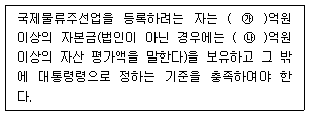
- ㉮ 2, ㉯ 2
- ㉮ 2, ㉯ 4
- ㉮ 3, ㉯ 6
- ㉮ 3, ㉯ 8
- ㉮ 4, ㉯ 10
(정답률: 알수없음)
34. 영업창고는 소매상, 도매상, 제조업자 등이 임대한 창고이며, 자가창고는 자가가 소유한 창고이다. 영업창고와 자가창고에 대한 내용으로 옳지 않은 것은?
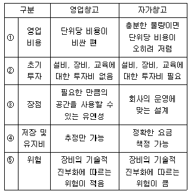
- ①
- ②
- ③
- ④
- ⑤
(정답률: 알수없음)
35. 아래 글상자의 ( )안에 들어갈 가장 적합한 포장물류의 성질은?
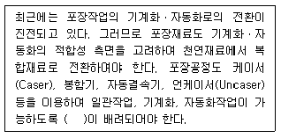
- 보호성
- 하역성
- 작업성
- 보관성
- 표시성
(정답률: 알수없음)
36. e-조달의 장단점으로 옳지 않은 것은?
- 문서처리비용이 감소되며 조달시간의 감소로 인해 조달담당자의 생산성이 증대된다.
- 과거보다 적은 자원으로 적합한 공급자를 찾을 수 있으며 구매자와 판매자 간의 의사소통이 개선되어 주문주기가 짧아진다.
- 구매자는 여러 판매자로부터 가격 및 품질정보를 얻어 비교 구매할 수 있는 기회가 생기고 더 낮은 가격으로 구매가 가능해진다.
- 거래정보의 유출위험이 있다.
- 표준 프로토콜이 완벽하고 신뢰도 높은 시스템을 사용하기 때문에 보안 상 문제는 전혀 없다.
(정답률: 알수없음)
37. 고객서비스 요인은 거래 전 요인, 거래요인 그리고 거래 후 요인으로 구분된다. 보기에서 제시하는 활동 중 해당되는 요인이 다른 하나는 무엇인가?
- 배달 후 무료로 포장을 수거
- 고객이 원하는 시간에 맞는 적시배달
- 수리기간 중 대체품을 제공
- 고객의 불평이나 클레임을 해결해 주는 것
- 제품 보증서비스
(정답률: 알수없음)
38. QR에 관련된 내용으로 옳지 않은 것은?
- 과거 섬유산업에서 원사공장에서 매장까지의 납기기간을 혁신적으로 줄일 수 있게 한 시스템을 시작으로 발전하였다.
- QR시스템 도입은 식품, 일상용품업계에도 적용되어 매출증가뿐 아니라 재고회전율 개선효과도 가져오게 되었다.
- QR은 POS, EDI를 통해 더욱 효율적으로 활용될 수 있다.
- QR은 pull 시스템이 아닌 push 시스템이라고 할 수 있다.
- 수요가 가변적이고 유행에 민감하며 제품유형이 다양한 상품의 경우는 QR을 활용하기가 좋다.
(정답률: 알수없음)
39. Push전략에 해당되는 내용을 모두 고르면?
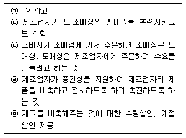
- ㉠
- ㉢
- ㉠, ㉢
- ㉡, ㉣, ㉤
- ㉠, ㉣, ㉤
(정답률: 알수없음)
40. CRM 활동의 사례에 대해 기술한 것이다. 이 활동 중 기존고객과 신규고객이라는 목적 대상으로 구분할 때 그 대상이 다른 하나는?
- 구매액에 따른 포인트를 적립시키고 적립 포인트에 따라 금전적 혜택을 제공
- 해지를 위한 커뮤니케이션 채널을 단일화하고 전담 상담요원을 배치
- 고객의 기여도를 평가하여 우수고객을 선정하고 다양한 금전적, 비금전적 혜택을 제공
- 이탈의 원인이 되는 업무 프로세스나 제도를 파악하고 개선
- 타 기업과의 공식적 제휴를 통해 경쟁사 고객을 자사고객으로 유치할 수 있는 프로모션
(정답률: 알수없음)
3과목: 상권분석
41. 소매입지는 단일점포의 입지와 여러 점포가 모여있는 상업시설인 집합점포의 입지로 구분할 수 있다. 아래의 항목들 가운데 단일점포의 입지를 결정하는데 활용하는 방법만을 포함하고 있는 것은?
- 소매인력이용법, 중심지파악법
- 유추법, 중심지파악법
- 체크리스트법, 중심지파악법
- 체크리스트법, 소매인력이용법
- 유추법, 체크리스트법
(정답률: 알수없음)
42. A도시의 인구는 20만명, B도시의 인구는 40만명, 중간에 위치한 C도시의 인구는 6만명이다. A도시와 C도시의 거리는 5Km, C도시와 B도시의 거리는 10Km인 경우 Reilly의 소매인력이론에 의하면 C도시의 인구 중에서 몇 명이 A도시로 흡수되는가?
- 1만 명
- 2만 명
- 3만 명
- 4만 명
- 5만 명
(정답률: 알수없음)
43. 아래 글상자 내용은 입지대안을 평가하기 위한 어떤 원칙에 대한 설명이다. 무엇에 대한 설명인가?
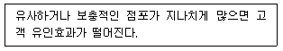
- 접근가능성의 원칙(principle of accessibility)
- 고객차단의 원칙(principle of interception)
- 점포밀집의 원칙(principle of store congestion)
- 보충가능성의 원칙(principle of compatibility)
- 동반유인의 원칙(principle of cumulative attraction)
(정답률: 알수없음)
44. 입지의 지리적 조건에 관한 아래의 내용 중 가장 옳지 않은 것은?
- 멀리서부터 잘 보이는, 다시 말해 가시성이 좋은 지역이 좋은 입지이다.
- 가시성이 높은 곳이면 구매경험률과 고정고객비율을 동시에 높일 수 있다.
- 토지와 도로의 조건은 2면 각지 보다는 1면 각지가 유리하다.
- 복수상권이라면 각 상권을 연결하는 도로변이 좋은 입지이다.
- 버스정류장이나 지하철역을 끼고 있는 대로변이 좋다.
(정답률: 알수없음)
45. 상가를 신설하기 위해 기존의 건물을 인수하기로 했다. 면적이 2,000m2의 대지 위에 건물은 A동, B동으로 총 2개동이다. A동은 각 층의 면적이 200m2인 지상 3층과 지하 1층, B동은 각 층의 면적이 300m2인 지상 6층과 지하 2층으로 구성되어 있다. 단, 건물외부에 200m2의 지상주차장(건물부속)이 있고 건물내부 주민공동시설 면적의 합이 200m2이면 이 때 용적률은 얼마인가?
- 100%
- 110%
- 120%
- 140%
- 160%
(정답률: 알수없음)
46. Huff 모델에 관한 특징이나 설명으로 옳지 않은 것은?
- 실제 소비자의 선택자료를 토대로 하는 공간상호작용 모형의 한 종류이다.
- 거리와 점포의 유인력을 이용하는 점은 Reilly 모델과 유사하다.
- 상권을 분석하면서 결정론적 접근보다 확률론적인 접근을 시도한다.
- 특정 하부지역(zone) 소비자의 점포별 효용을 알아도 점포별 이용확률은 추정할 수 없다.
- 특정 지역의 개별 점포에 대한 이용자 수를 추정할 수 있다.
(정답률: 알수없음)
47. Christaller의 중심지이론에서 말하는 중심지기능의 최대 도달거리(the range of goods and services)란 무엇을 말하는가?
- 수행되는 유통서비스기능이 지역거주자에게 제공될 수 있는 한계거리
- 상위중심지의 영향력이 하위중심지까지 미치는 거리
- 소비자가 도보로 접근할 수 있는 중심지까지의 거리
- 상위 중심지와 하위 중심지 사이의 거리
- 전문품 상권과 편의품 상권의 지리적 최대차이
(정답률: 알수없음)
48. 대중 교통수단인 지하철이나 철도역을 중심으로 형성되는 역세권 상권에 대한 설명으로 적절하지 않은 것은?
- 지하철, 철도, 버스 및 택시 등 교통수단 간 상호환승이 가능하여 교통의 흐름이 연결되고 분산되는 결절점을 중심으로 형성된다.
- 역세권의 상권범위는 역의 규모, 주변지역의 개발상황, 다른 교통수단과의 연계성 등 다양한 변수에 의해 달라진다.
- 대부분 역세권의 유동인구는 지역 내부인구 보다는 지역 외부인구의 비중이 높다는 특징을 갖는다.
- 지상과 지하의 입체적 상권으로 쾌적한 환경을 조성하기 위해 저밀도 개발이 이루어지는 경우가 많다.
- 임대료나 지가의 수준이 상대적으로 높아서 점포를 개설할 경우에는 고비용을 감수할 수 있는 수익을 확보해야 한다.
(정답률: 알수없음)
49. 아래 글상자 안의 내용과 같은 장단점을 지닌 국내 대형 소매점의 출점형태는 어느 것인가?
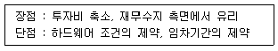
- 기존점포 인수
- 건물임차
- 부지임차 신축
- 부지매입 후 신축
- 건물매입출점
(정답률: 알수없음)
50. 상권분석과 관련된 지리정보시스템의 활용분야로서 적절하지 않은 것은?
- gCRM
- gBigdata
- 영업지점관리
- 공간 클러스터링
- 공간 데이터마이닝
(정답률: 알수없음)
51. 쇼핑몰에 대한 다양한 분류기준을 적용할 때 몰의 유형과 특징을 바르게 연결하지 않은 것은?
- 수평형몰 - 바닥면적이 넓어 층단위, 또는 바닥단위로 전개되는 몰이며 수직형몰과 대비된다.
- 순환형몰 - 4개 내지 6개의 키 테넌트를 사방에 설치하고 중심에 커다란 코트를 설치하는 대표적인 다핵형 몰이다.
- 아케이드형몰 - 2동 이상의 건물 사이에 위치하여 상부에 경량의 지붕이 설치되어 외기의 영향을 감소시키는 반외부형 몰이다.
- 단일형몰 - 하나의 몰로 보행동선을 구성하며 통상 양단에 키 테넌트가 위치하게 된다.
- 혼합형몰 - 키 테넌트와 전문점이 함께 있는 경우로 각 매장을 연결해주는 통로의 개념이 강하다.
(정답률: 알수없음)
52. 상권구획과정에서 사용되는 기법인 티센다각형(thiessen polygon) 활용과 관련된 내용으로 옳지 않은 것은?
- 공간독점접근법에 기반한 상권구획모형의 일종이다.
- 각 점포들이 차별성이 없는 상품을 판매할 때 더 유용하다.
- 인접하는 점포 간의 경쟁수준이 낮을수록 다각형의 크기는 작아진다.
- 근접구역법으로 소비자들이 가장 가까운 점포를 선택한다고 가정한다.
- 접근성이 소비자들의 점포선택의 가장 중요한 결정요소일 때 유용하다.
(정답률: 알수없음)
53. 어느 지역에 3개의 대형마트가 있고 거주자들의 점포별 이용자 수를 추정하기 위해 이 지역을 존(zone, 하부지역) 1, 2, 3으로 구분했다고 하자. 각 존별 거주자 수, 점포별 면적, 존의 중심점과 점포 간 거리(Km)가 아래 표와 같다고 할 때, 존2에서 대형마트 1의 이용자 수는 몇 명으로 예측되는가? (단, Huff 모델을 이용하고 점포면적과 거리에 대한 민감도계수 α = 1.0, β = -2.0임)
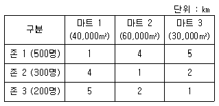
- 7
- 11
- 43
- 86
- 171
(정답률: 알수없음)
54. 입지분석 과정에서 입지조건을 평가하여 점포의 매력도를 평가할 때 이용할 수 있는 회귀분석 모형에 관한 설명으로 가장 옳지 않은 것은?
- 회귀분석에서는 표본의 수가 충분하게 확보되어야 한다.
- 소매점포의 성과에 영향을 미치는 요소들을 파악하는데 도움이 된다.
- 모형에 포함되는 독립변수에는 서로 상관성이 높은 변수들을 활용한다.
- 성과에 영향을 미치는 독립변수에는 상권 내 소비자들의 특성을 포함할 수 있다.
- 성과에 영향을 미치는 독립변수에는 점포특성과 상권 내경쟁수준 등을 포함할 수 있다.
(정답률: 알수없음)
55. 소매업의 공간적 분포를 설명하는 중심성지수에 대한 설명으로 옳지 않은 것은?
- 상업인구를 그 지역의 거주인구로 나눈 값을 중심성지수라 한다.
- 중심성지수가 1이라는 것은 해당 지역의 구매력 유출과 유입이 동일하다는 뜻이다.
- 중심성지수는 소매업의 공간적 분포를 설명하는 것으로 소매업이 불균등하게 분포되어 있음을 가정한다.
- 소매 판매액의 변화가 없어도 해당 지역의 거주인구가 감소하면 중심성지수는 낮아지게 된다.
- 중심성지수가 1이라는 것은 소매판매액과 그 지역 내거주자의 소매구매액이 동일하다는 뜻이 된다.
(정답률: 알수없음)
56. 도시 내 소매점포의 접근성에 대한 내용으로 옳지 않은 것은?
- 보도의 폭은 보행자의 이동속도에 영향을 미치므로 점포앞 보도폭은 넓을수록 좋다.
- 점포를 건축선에서 후퇴하여 위치시키면 점포 앞보도폭이 넓어져서 보행자의 이동속도를 줄이므로 매우 바람직하다.
- 입구 수는 한 개보다는 복수가 좋다.
- 점포 앞 보도의 폭은 최소한 2-3M 정도는 확보하는 것이 좋다.
- 점포의 정면너비가 좁으면 기둥간판, 네온간판 등 시계성을 높이기 위한 보강조치가 필요하다.
(정답률: 알수없음)
57. 상권내의 주거패턴이 상권의 매력도에 영향을 미친 것으로 옳지 않은 것은?
- 동일지역에 중형 아파트 단지와 소형 아파트 단지가 있다면, 중형 아파트주민의 소비성향의 하향 평준화보다 소형 아파트 주민의 상향 평준화가 크게 이루어진다.
- 아파트단지의 경우 소비의 전이속도가 매우 빠르다.
- 주택생애주기이론(housing lifestyle theory)에 따르면 주택소유자의 연령층에 따라서 주거지역의 공간이동이 다르게 나타난다.
- 아파트단지는 일반주거지에 비해 소비성향이 낮은 것이 보통이다.
- 유동인구의 크기도 중요하지만 유동인구의 연령별 분포 성향도 중요하다.
(정답률: 알수없음)
58. 입지배정모델(location-allocation model)의 특성 및 용도와 관련된 항목으로 옳지 않은 것은?
- 재화 및 서비스에 대한 소비자 수요의 공간적 분포 예측
- 기존 상권에 신규점포 추가 시의 효과 분석
- 상권 내에 위치하고 있는 기존점포의 재입지 및 폐점 결정
- 일정 상권에 복수의 점포를 배치하는 소매점 네트워크 설계
- 기존 상권에 관한 정보를 바탕으로 상권 내 개설점포의 수 결정
(정답률: 알수없음)
59. 소비자의 점포선택행위를 조사하여 상권분석을 행하는 기법 중 하나인 MNL모델에 대한 설명으로 옳지 않은 것은?
- 다항로짓모형으로 불리는 확률선택모형이다.
- 집단별 데이터를 사용하여 모형의 매개변수 값을 추정한다.
- 소비자가 특정 주거지에 살면서 특정 점포를 이용할 확률을 계산한다.
- 선택가능한 대안들 중 가장 매력적인 대안을 선택하는 선택모형의 일종이다.
- 점포와의 거리와 점포면적 이외에도 다양한 상권변수 들을 모델에 반영할 수 있다.
(정답률: 알수없음)
60. 도심재생(gentrification)에 이르는 과정에서 발생하는 도시 공간구조의 일반적인 변화과정을 순서대로 나열 할 때 다음 중 세 번째에 해당하는 것은?
- 부도심들과 도시외곽이 성장하면 도심은 슬럼으로 변화한다.
- 중심상업지구나 상점가(shopping street)가 도심에 형성되어 발전한다.
- 도시가 성장하면서 인구가 유입되면 도시의 공간구조가 분화하기 시작한다.
- 인구밀집, 교통체증 등으로 도심인구가 교외로 이주하고 교외 쇼핑센터들이 활성화된다.
- 도심재생이 이루어지면 전국적 영업을 추구하는 체인점들이 쇼핑몰보다 조건이 좋은 도심에 입점한다.
(정답률: 알수없음)
4과목: 유통마케팅
61. 유통업의 서비스 품질관리에 대한 설명으로 가장 옳지 않은 것은?
- 서비스 품질은 기술적 차원의 결과품질과 기능적 차원의 과정품질로 나눌 수 있다.
- 결과품질은 고객이 기업과의 상호작용에서 무엇을 얻었는가를 나타낸다.
- 과정품질은 고객이 서비스 제공과정을 어떻게 경험하는가를 나타낸다.
- 결과품질은 서비스 결과, 유형성 및 신뢰성 같은 서비스 품질 차원에 중점을 둔다.
- 과정품질은 구매자와 판매자의 상호작용이 끝난 뒤 고객에게 남은 것을 뜻한다.
(정답률: 알수없음)
62. 유통판촉과 소비자판촉에 대한 내용으로 가장 옳지 않은 것은?
- 신제품 출시 초기에는 소비자판촉 보다는 유통판촉을 통해 제품취급률을 높이는게 좋다.
- 제품에 대한 인지도가 높다면 유통판촉 보다는 소비자 판촉에 집중하는 것이 좋다.
- 복잡한 제품의 경우 소비자판촉 보다는 유통판촉을 중심으로 실시한다.
- 자동차 타이어 등과 같은 수직적 제품라인의 경우 소비자판촉 보다는 유통판촉에 집중하는 것이 좋다.
- 소수의 큰 세분시장을 갖고 있는 냉장고, 세탁기, 에어컨 등의 경우는 유통판촉을 중심으로 실시하는 것이 바람직하다.
(정답률: 알수없음)
63. 상품 분류체계를 설명하는 아래의 표에서 빈 칸에 들어갈 올바른 용어는?
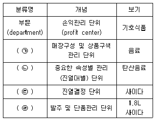
- ㉠ 품군, ㉡ 품목, ㉢ 품종, ㉣ 단품
- ㉠ 품종, ㉡ 품군, ㉢ 단품, ㉣ 품목
- ㉠ 품목, ㉡ 품종, ㉢ 품군, ㉣ 단품
- ㉠ 품군, ㉡ 품종, ㉢ 품목, ㉣ 단품
- ㉠ 단품, ㉡ 품군, ㉢ 품종, ㉣ 품목
(정답률: 알수없음)
64. 아래 글상자 사례의 소매점이 겪고 있는 서비스 품질 갭의 해결방안으로 가장 옳지 않은 것은?
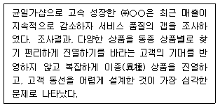
- 서비스청사진 등을 사용하여 명확하게 서비스를 개발하고 설계한다.
- 고객의 기대를 반영한 물리적 증거의 역할에 초점을 둔다.
- 고객의 편리성 강화라는 새로운 서비스 목표를 수립한다.
- 고객의 기대를 서비스에 반영하는 업무의 표준화를 설계한다.
- 고객들에게 자신의 역할과 책임에 대해서 알게 한다.
(정답률: 알수없음)
65. 다음 글상자의 ( )안에 들어갈 용어의 짝으로 바른 것은?
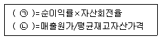
- ㉠ 총자산회전율, ㉡ 매출총이익률
- ㉠ 총자산이익률, ㉡ 재고자산회전율
- ㉠ 순자산이익률, ㉡ 평균자산회전율
- ㉠ 순자산이익률, ㉡ 매출총이익률
- ㉠ 총자산회전율, ㉡ 평균자산회전율
(정답률: 알수없음)
66. 아래 글상자 소매기업의 사례에서 고객생애가치를 높이는 방법으로 가장 옳지 않은 것은?
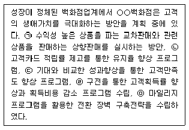
- ㉠
- ㉡
- ㉢
- ㉣
- ㉤
(정답률: 알수없음)
67. 상품구성을 위한 계획을 순서대로 옳게 나열한 것은?
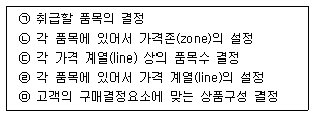
- ㉠ - ㉡ - ㉢ - ㉣ - ㉤
- ㉠ - ㉡ - ㉣ - ㉢ - ㉤
- ㉠ - ㉢ - ㉣ - ㉤ - ㉡
- ㉠ - ㉤ - ㉡ - ㉣ - ㉢
- ㉠ - ㉤ - ㉣ - ㉡ - ㉢
(정답률: 알수없음)
68. 가격에 대한 설명으로 가장 옳지 않은 것은?
- 가격은 단기적으로 쉽게 모방할 수 있어 유동적으로 결정된다.
- 다른 점포와의 차별화 정도가 높다면 가격결정에 대한 자유도가 높아진다.
- 제조업의 경우 소매점이 중저가 정책을 취해서 보다 많이 판매하기를 원한다.
- 전시상품이나 보완상품은 저마진정책을 채택해서 경쟁업체보다 저렴하게 판매하는 것이 좋다.
- 핵심상품은 고객을 흡인할 수 있는 수준의 가격결정을 위해 시장의 상황변화에 적시에 대응해서 가격을 운용해야 한다.
(정답률: 알수없음)
69. 아래 글상자의 유통판매촉진의 유형 중 비가격판촉만으로 구성된 것은?
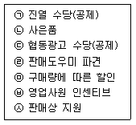
- ㉡, ㉢, ㉣
- ㉠, ㉢, ㉤
- ㉡, ㉣, ㉥, ㉦
- ㉠, ㉢, ㉣, ㉤
- ㉣, ㉤, ㉥, ㉦
(정답률: 알수없음)
70. 옴니 채널(omni channel)에 대한 설명으로 가장 옳지 않은 것은?
- 소비자들은 오프라인 매장, 온라인 쇼핑몰, 모바일앱 등 여러 경로를 통해 구매할 수 있다.
- 소비자는 시간과 장소에 구애받지 않고 상품정보를 얻을 수 있고, 다양한 채널을 비교해 가장 합리적인 구매를 할 수 있다.
- 기업은 소비자와의 다양한 접점을 만들어내고 브랜드와 상품을 효과적으로 노출하며, 일관된 메시지를 각인 시켜 고객 경험을 극대화할 수 있다.
- 옴니채널은 모든 유통경로를 연결해 고객이 하나의 매장을 이용하는 것처럼 느끼는 유통정보시스템을 추가한 통합적인 채널이다.
- 소비자는 온라인 매장에서 제품을 살펴본 뒤 오프라인 매장의 제품을 구매하는 쇼루밍(showrooming), 오프라인 매장에서 제품에 대한 정보를 파악하여 온라인 매장에서 제품을 구매하는 역쇼루밍(reverse showrooming)의 형태를 보인다.
(정답률: 알수없음)
71. 촉진의 기본적 4가지 수단들의 상대적 특징을 비교한 아래 글상자의 ( ㉠ ), ( ㉡ ), ( ㉢ ), ( ㉣ )에 들어갈 내용이 가장 옳게 나열된 것은?
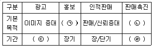
- ㉠ 신뢰형성 - ㉡ 관계형성 - ㉢ 장기 - ㉣ 단기
- ㉠ 관계형성 - ㉡ 신뢰형성 - ㉢ 장기 - ㉣ 단기
- ㉠ 신뢰형성 - ㉡ 관계형성 - ㉢ 단기 - ㉣ 장기
- ㉠ 신뢰형성 - ㉡ 매출증대 - ㉢ 장기 - ㉣ 단기
- ㉠ 관계형성 - ㉡ 매출증대 - ㉢ 장기 - ㉣ 장기
(정답률: 알수없음)
72. 소매업자 중심으로 상품카테고리 유형을 분류할 때, 핵심고객유도(core traffic) 카테고리에 속하는 상품의 특징으로 옳은 것은?
- 고매출 - 고마진 상품
- 고매출 - 저마진 상품
- 중매출 - 고마진 상품
- 중매출 - 저마진 상품
- 중매출 - 중마진 상품
(정답률: 알수없음)
73. 판매촉진 수단으로 많이 활용되는 프리미엄(premium)에 대한 설명으로 옳지 않은 것은?
- 지속적으로 사용하면 상품 자체의 이미지를 손상시키는 효과가 크다.
- 프리미엄은 광고에 대한 주목률을 높여주는 효과도 있다.
- 프리미엄은 유통업자들이 자발적으로 진열공간을 할당하게 하는 효과가 있다.
- 품질 수준이 평준화되어 차별화의 어려움이 있을 때 효과적이다.
- 일종의 선물이나 혜택으로 자사의 로고가 새겨진 컵, 펜, 가방 등을 상품의 형태로 제공하는 것이다.
(정답률: 알수없음)
74. 차별화 전략에 대한 설명으로 가장 옳은 것은?
- 자사 제품을 효과적·효율적으로 전달할 수 있는 하나의 세분시장에 집중하는 전략이다.
- 시너지효과를 지닌 몇 개의 세분시장에 상이한 전략으로 동시에 집중하는 전략이다.
- 차별적인 욕구를 지닌 세분시장에 동일한 유통경로 개념을 가지고 접근하는 방식이다.
- 타겟 구매자 집단의 규모가 클 경우 제품 사양 및 가격을 다양화하여 이익을 증대시키고자 하는 전략이다.
- 설탕이나 야채와 같은 생활필수품이나 원재료의 유통전략으로 적합하다.
(정답률: 알수없음)
75. 아래 글상자 ( )안에 들어갈 가격 결정 방식을 옳게 나열한 것은?
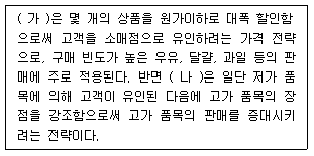
- (가) 적응가격(adaptation pricing) - (나) 차별가격(discriminatory pricing)
- (가) 관습가격(customary pricing) - (나) 유인가격(bait pricing)
- (가) 손실선도가격(loss-leader pricing) - (나) 유인가격(bait pricing)
- (가) 손실선도가격(loss-leader pricing) - (나) 권위가격(prestige pricing)
- (가) 단수가격(odd pricing) - (나) 적응가격(adaptation pricing)
(정답률: 알수없음)
76. 점포 내 레이아웃을 계획할 때는 고객의 동선을 고려하여야 한다. 고객동선에 대한 아래의 내용 중에서 옳지 않은 것은?
- 격자형(grid) 방식은 수퍼마켓 등에서 주로 사용하는 곡선형 동선방식으로, 고객을 자연스럽게 점내로 불러들이기에 용이한 방식이다.
- 자유형(free-flow) 방식은 주로 백화점 등에서 사용되며, 판매원이 대인판매를 하면서 동시에 매장 전체를 감시하기 어렵다는 단점이 있다.
- 충동구매를 유발하기 위해서는 경주로(racetrack) 방식이 바람직하다.
- 상품탐색이 용이하면서, 1인당 평균동선이 가능한 한 길게 이어지는 고객동선이 바람직하다.
- 경주로(racetrack) 방식은 주통로를 중심으로 여러 매장입구가 연결되도록 하는 방식이다.
(정답률: 알수없음)
77. 머천다이징의 종류와 설명을 짝으로 옳게 연결한 것은?
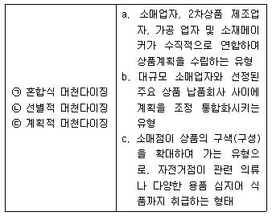
- ㉠-a, ㉡-b, ㉢-c
- ㉠-b, ㉡-a, ㉢-c
- ㉠-a, ㉡-c, ㉢-b
- ㉠-c, ㉡-a, ㉢-b
- ㉠-c, ㉡-b, ㉢-a
(정답률: 알수없음)
78. 소매업체가 지속적 경쟁우위를 확보할 수 있는 중요요소에 대한 설명으로 가장 옳지 않은 것은?
- 고객충성도는 강력한 소매브랜딩, 포지셔닝, 충성도 프로그램에 의해 구축되며 경쟁력 강화에 매우 중요한 요소이다.
- 온라인과 오프라인 소매업체의 결정적 경쟁요소는 첫째도 입지, 둘째도 입지, 셋째도 입지이다.
- 정교한 물류시스템의 활용은 소매업체의 효율성을 증대시킨다.
- 소매업체들은 공급업체와의 강력한 유대를 통해 인기상품을 우선적으로 공급받는 배타적 권리를 확보할 수 있다.
- 백화점과 같은 고품격 서비스를 제공하는 소매업체는 고객서비스의 질을 향상시킴으로써 경쟁력을 강화할 수 있다.
(정답률: 알수없음)
79. 소매 조직 구성원의 동기부여를 위한 직무설계에 대한 설명으로 옳은 것은?
- 직무확대란 한 업무에서 타 업무로 주기적으로 이동시키는 방법을 말한다.
- 직무 충실화란 소매점 직원이 작업의 계획, 실행, 평가를 통제하는 정도를 증대시킴으로써 직무를 확대하는 방법을 말한다.
- 직무특성모형에서 과업 정체성이란 직무가 다른 사람의 인생이나 일에 중요한 영향을 미치는 정도를 말한다.
- 직무교차란 개인을 대상으로 수평적 직무를 확대하는 것을 말한다.
- 자율적 작업팀이란 스스로 팀을 구성하여 수평적으로 직무를 확대하는 것을 말한다.
(정답률: 알수없음)
80. 소매업체-공급업체(벤더)간의 전략적 파트너쉽 관계 발전 단계로 옳은 것은?
- 탐색 → 인식 → 확장 → 결속
- 탐색 → 확장 → 인식 → 결속
- 인식 → 탐색 → 확장 → 결속
- 인식 → 결속 → 탐색 → 확장
- 결속 → 탐색 → 확장 → 인식
(정답률: 알수없음)
5과목: 유통정보
81. 아래 글상자 ( )안에 들어갈 가장 알맞은 용어는?
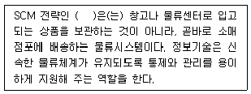
- CRP
- 3자 물류
- ABC
- ERC
- 크로스도킹
(정답률: 알수없음)
82. 전자서명이 제공하는 기능에 대한 설명으로 가장 옳지 않은 것은?
- 위조불가 - 서명자만이 서명문을 생성할 수 있다.
- 인증 - 서명문의 서명자를 확인할 수 있다.
- 재사용 불가 - 서명문의 해시값을 전자서명에 이용하므로 한 번 생성된 서명을 다른 문서의 서명으로 사용할 수 없다.
- 기밀보장 - 전자서명이 포함된 문서는 서명자를 제외하고는 누구도 읽을 수 없다.
- 부인 방지 - 서명자가 나중에 서명한 사실을 부인할 수 없다.
(정답률: 알수없음)
83. 네트워크 보안 방안 중 IP관리시스템이 접근 제어에 활용하는 것은?
- MAC주소, 호스트이름
- MAC주소, IP주소
- IP주소, 접근하려는 포트
- 접근하려는 포트, 호스트이름
- 접근하려는 포트, MAC주소
(정답률: 알수없음)
84. 유통물류 기업 A사는 프로세스 재정비와 정보화 프로젝트를 구상하고 있다. 프로젝트를 내부자원으로 할 경우와 아웃소싱을 할 경우 각각의 단점으로 가장 옳지 않은 것은?
- 아웃소싱 시 단점 - 프로세스가 친숙하지 못하고, 독자적이지 못하다.
- 내부 구축 시 단점 - 정보시스템의 가치를 객관적으로 평가하기가 어렵다.
- 아웃소싱 시 단점 - 스탭을 유지하고 기능을 향상시키는데 추가적인 비용이 요구된다.
- 내부 구축 시 단점 - 조직 내부에서의 이권다툼이 발생할 수 있다.
- 아웃소싱 시 단점 - 시스템 구축과정에서 조직 내 정보가 유출될 우려가 있다.
(정답률: 알수없음)
85. 아래 글상자의 현상을 일컫는 용어로 가장 적절한 것은?
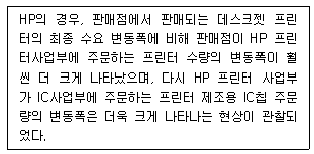
- 롱테일 법칙
- 파킨슨 법칙
- 디지털 다윈주의
- 채찍효과
- 경제적주문량모형
(정답률: 알수없음)
86. 마케팅 채널상에서 구성원들 간에 발견되는 의존 관계나 영향력이 생기는 상황으로 가장 옳지 않은 것은?
- 거래관계에서 잠재거래선의 수가 적을 경우에 발생한다.
- 거래관계에서 현재 활용가능한 대안의 수가 적을 경우에 발생한다.
- 거래비용분석의 개념 하에서 기존 거래선에 대한 거래특유 투자가 적을 경우에 발생한다.
- 상대방과의 거래관계로부터 얻는 성과가 중요하거나 매우 가치가 있을 경우에 발생한다.
- 거래관계로부터 얻는 성과가 잠재 거래선으로부터 얻을 수 있는 성과보다 클 경우에 발생한다.
(정답률: 알수없음)
87. 관계형 데이터베이스에 대한 설명으로 가장 옳지 않은 것은?
- 데이터베이스 테이블은 하나 이상의 레코드(record)로 구성되어 진다.
- 각 필드(field)는 필드명, 데이터형, 크기 등을 지정해 주어야 한다.
- 각 레코드(record)가 유일함을 가지도록 필드 중 하나 이상을 키 속성으로 지정해 주어야 한다.
- 레코드(record)는 데이터베이스의 ‘행’을 의미한다.
- 인덱스 키(index key)로 설정된 필드는 하나의 테이블에 반드시 한 개만 지정되야 한다.
(정답률: 알수없음)
88. OLAP(Online Analytical Processing)의 주요 분석기능의 하나로 아래의 글상자가 뜻하는 기능으로 가장 옳은 것은?
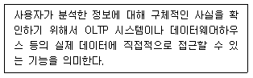
- 피보팅(pivoting)
- 드릴 업(drill up)
- 드릴 다운(drill down)
- 드릴 쓰루(drill trough)
- 드릴 어크로스(drill across)
(정답률: 알수없음)
89. 데이터마이닝에서 사용되고 있는 다양한 컴퓨터 분석 기법의 하나로 아래의 글상자가 뜻하는 기법으로 가장 옳은 것은?
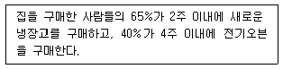
- 군집분석
- 분류분석
- 순차패턴
- 연관규칙
- 예측분석
(정답률: 알수없음)
90. 아래 글상자 ( ) 안에 들어갈 가장 적절한 용어는?
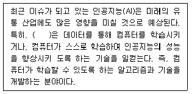
- 기계학습
- e-러닝
- 자가학습
- 베이지안(Bayesian)
- 심층신경망
(정답률: 알수없음)
91. 정보기술 용어와 그 설명으로 가장 옳지 않은 것은?
- 사물인터넷 - 정보교류를 사람과 사물, 사물과 사물로 확장시킨 개념으로 센서·지능을 사물(객체)에 탑재하고 인터넷 등과 상호연결하여 각종 정보를 수집, 처리운영하는 기술
- O2O - 온라인과 온라인을 연결한 기술로 특정지역에 들어서면 실시간으로 스마트 디바이스를 통해 관련 정보 및 서비스를 제공하여 어디서나 온라인 서비스를 누릴 수 있는 기술
- Bluetooth - 단파로 무선장치 간에 음성과 데이터통신을 가능케 하는 칩 기술
- NFC - 가까운 거리에서 비접촉식으로 무선 데이터를 주고 받는, 상대적으로 보안이 우수하고 가격이 저렴한 기술
- LBS - 무선통신망 및 GPS 등을 통해 얻은 위치정보를 바탕으로 인터넷 사용자에게 사용자가 변경되는 위치에 따른 주변의 정보를 제공하는 무선 콘텐츠 서비스 지원 기술
(정답률: 알수없음)
92. 제3자 물류에 대한 설명으로 가장 옳지 않은 것은?
- 사내 물류조직을 별도로 분리하여 자회사로 독립하여 물류업무를 추진하는 형태
- 기업의 물류활동을 완전히 아웃소싱함으로써 운영뿐만 아니라 물류관리, 계획까지 전략적으로 운영 가능한 형태
- 비교적 장기적 계획에 의거 수행되며, 협력적 파트너십 관계를 형성함으로써 SCM의 도입 및 확산을 촉진하는 매개역할을 수행할 수 있는 물류형태
- 물류전문업체에 위탁함으로써 물류관련 고정비용을 감소시킬 수 있는 물류형태
- 전문물류서비스업체로부터 다양한 물류 관련 부가서비스 제공을 통해 고객만족도를 높일 수 있는 물류형태
(정답률: 알수없음)
93. 디지털 경제 성장 과정에서 나타나는 주요 변화로 가장 옳지 않은 것은?
- 인터넷을 통한 정보전달 속도 증대
- 고객에 대한 서비스의 효율성 증대
- 인터넷을 통한 콘텐츠 전송 증대
- 인터넷을 통한 물리적 제품의 소매 거래 감소
- 영업 및 마케팅 비용 감소
(정답률: 알수없음)
94. 노나카(Nonaka)는 조직의 지식창출과정을 나선형 구조의 SECI모형으로 설명하고 있다. 나선형 진화과정 중 개인과 개인이 대면접촉을 통해 지식생성이 이루어지는 과정을 뜻하는 것은?
- 사회화(socialization)
- 외부화(externalization)
- 개인화(personalization)
- 내면화(internalization)
- 종합화(combination)
(정답률: 알수없음)
95. 티머스(Timmers, 2001)가 구분한 가치사슬에 따른 비즈니스 모델 중 아래의 글상자가 뜻하는 유형으로 가장 적합한 것은?
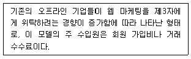
- 경매형(e-Auction)
- 조달형(e-Procurement)
- 쇼핑몰형(e-Mall)
- 중개시장형
- 가상 커뮤니티형(virtual community)
(정답률: 알수없음)
96. 아래 글상자 ( )안에 들어갈 용어와 그에 맞는 설명이 가장 옳은 것은?
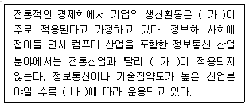
- (가) - 수확체감의 법칙 - 기술의 발달 속도를 성능으로 감안해 보면, 두배의 성능을 구현하는데 걸리는 시간이 점점 줄어들고 있는 현상
- (나) - 수확체증의 법칙 - 생산요소(노동시간)를 한 단위 추가하면 추가할수록 산출량과 증가량이 증가하는 현상
- (가) - 수확불변의 법칙 - 이론상으로 추가 생산요소와 비례적으로 증가하는 산출량이 일정하게 증가하는 현상
- (나) - 수확체감의 법칙 - 생산요소(노동시간)를 한 단위 추가함에 따라 수익의 증가분이 처음에는 높게 나타나다가 시간이 지날수록 한 단위의 노동에 대한 수익 증가분이 감소하는 현상
- (가) - 수확체증의 법칙 - 생산요소(노동시간)를 한 단위 추가하면 추가할수록 산출량이 증가하지만 증가량이 점점 감소되어 일정하게 증가하는 현상
(정답률: 알수없음)
97. 전자화폐의 원칙으로 가장 옳지 않은 것은?
- 전자화폐는 재활용할 수 없다.
- 전자화폐는 사용자의 사적인 비밀을 보호해야 한다.
- 전자화폐의 금액은 더 작은 액수로 나눌 수 있어야한다.
- 전자화폐의 보안성이 물리적인 존재에 의존해서는 안 된다.
- 전자화폐를 받은 판매자는 반드시 네트워크에 접속되어 있어야 한다.
(정답률: 알수없음)
98. QR코드 마케팅이 늘어나게 된 배경으로 가장 옳지 않은 것은?
- 미디어 매체별 접점 파악 및 효과측정이 용이하다.
- 누구나 손쉽게 QR코드 제작 및 다양한 디자인 변형이 가능해졌다.
- 기존 인쇄매체의 한계를 극복할 수 있는 대안으로 활용 할 수 있다.
- 개인별 컴퓨터의 보급 확대 및 다양한 마케팅 기술의 등장을 들 수 있다.
- QR코드를 활용하면 고객참여를 통한 즉각적인 반응을 이끌어 낼 수 있다.
(정답률: 알수없음)
99. 발주시스템에서 사용되고 있는 주문모형의 하나로 아래 글상자가 설명하는 기법은?
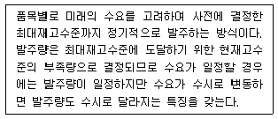
- ABC 모형
- 고정주문량 모형
- 고정주문기간 모형
- ROP(Reorder Point) 모형
- EOQ(Economic Order Quantity) 모형
(정답률: 알수없음)
100. 아래의 글상자가 뜻하는 해킹의 공격유형으로 가장 옳은 것은?
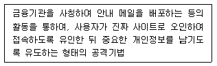
- 분산서비스거부공격
- 서비스거부공격
- 피싱
- 스니핑
- 스푸핑
(정답률: 알수없음)